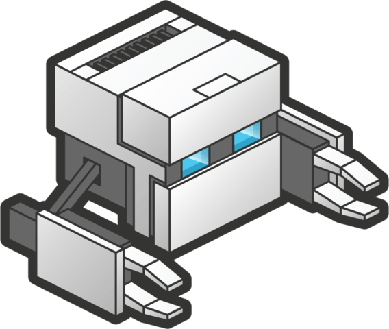

CARACTERISTICAS

PhoneGap. Las aplicaciones creadas con PhoneGap sólo pueden nutrirse de HTML, CSS y Javascript. Si requieren lógica generada por otros lenguajes de programación, deberán conseguirla de un backend a través de APIs o webservices. Con PhoneGap es posible desarrollar aplicaciones para los siguientes sistemas operativos:
- Android
- iOS
- Windows Phone
- BlackBerry OS
- Web OS
- Symbiam
- Bada
Vicente Zamora